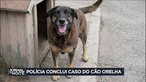

EM INVESTIGAÇÃO
Caso Cão Orelha: o que aconteceu, quem falhou e o que ainda não foi explicado
O caso do cão comunitário conhecido como Orelha tornou-se símbolo da luta contra maus-tratos em Santa Catarina. Esta reportagem reconstrói os fatos com base em documentos, depoimentos e investigações oficiais.